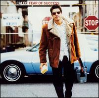

Discography
Easy Life
Sex and Sorrow • Mandolin Bonfire • May 2010
Eagerly awaited second album by Sex and Sorrow. Short, expensive and lush. A romantic view from the city. Restrained and elegant, yet with unexpected sweeps of glitch and slowcore. Intensely melodic and lyrically assured. Three years in the making, a powerful distillation of cold soul and synthesizer art-rock. Fruity.
-All ...
The Circus is Back in Town
Nadia Ackerman • Luna Moth Music • Apr 2010
Proud debut of original material from renowned Australian singer Nadia Ackerman. Stellar vocal skills combined with exuberant and mature songwriting and an all star cast of New York City"s most original players. No Accordion or Ukulele.
In the Pink
Donna Lewis • peruzzi music • Apr 2008
Pop singer/songwriter Donna Lewis was born in Cardiff, Wales, and began playing the piano at the age of six. Thanks to inspiration from her father, a jazz pianist, Lewis began writing songs while still a young teenager. She studied at the Welsh College of Music and Drama, majoring in ...
Joyous World
Sex and Sorrow • iTunes • Dec 2007
New York singer/songwriter DB Leonard teams with UK synthesizer master Harvey Jones. A haunting collection of spoken word and electronica. - All music guide
jazz for the road
Various • Universal • Dec 2007
Compilation of various drive friendly jazz recordings. Smooth and otherwise.
Wartime Favourites
Ruby Rendrag • Artist • Sep 2007
Harpooner
Paul Brill • Scarlet Shame Record • Nov 2006
As heard on his fourth album, Harpooner, Paul Brill isn't so much a singer/songwriter as a composer, and not so much a composer as a sound collagist. He constructs his musical tracks from snatches of conventional instruments piano, bass, oboe, English horn, cello, trumpet larded with, as a ...Essentials
Ellis Paul • Philo / Umgd • Oct 2006
A troubadour, a singer/songwriter, a folky, and a storyteller -- all fair labels for this artist, but they do not quite suffice. However, the tattoo of Woody Guthrie worn proudly on his arm is a good starting place from which to grasp Ellis Paul, for it is from the Woody ...Wildlife

Marly Hornik • Artist • Feb 2006
New York resident Marly Hornik is among the more promising female singer/songwriters who made her recording debut in the early 2000s. For Hornik, the phrase "female singer/songwriter" has not been synonymous with "angry young woman." Unlike many of the "angry young women" who emerged in the ?90s--Alanis Morisette ...
Still Chillin'
Gabrielle Roth • Raven Recording • Mar 2005
Gabrielle Roth & The Mirrors are back with more of their trademark gentle grooves with a deep, sesuous ambience. Instrumentation includes synth, fretless bass, electronic drums, concert tom, tone box, pony drum, harmonica, thumb piano and much more.
Featuring: Personnel: Allison Cornell (vocals, viola); Mindy Jostyn, Laur Fugere, Sara Carlson, Catherine ...
Photographs and 45's
DB Leonard • Artist • Mar 2005
By all accounts the one that "Broke the Bank". Rumours abound of Leonard in full Phil Spector mode, only speaking through a megaphone, then on completion of album walking out of his NYC apartment and dissapearing for two years. Nonetheless a gorgeous set of songs with support from NYC's ...
Waking The Day
Jerry Marotta/Tom Griesgraber • Artist • Jan 2005
Acoustic Jazz Guitar
Artie Traum • Roaring Stream • Sep 2004
It might seem like a peculiarly generic album title, but it must be noted that Artie Traum quite literally wrote the book on acoustic jazz guitar, as well as several other highlyregarded instructional books he's penned in addition to his recording career. This is not a solo album, however ...
Raven: Classics [box]

Gabrielle Roth and the Mirrors • Raven • Jun 2004
Four discs. Totem, Initiation, Bones and Ritual.
Souvenirs and photographs
Scott Cresswell • artist • Jan 2004
After spending the 1990s as a producer and sound designer for other artists, singer/songwriter Scott Cresswell at last stepped out on his own for 2004's Souvenirs Photographs. Not surprisingly, the album benefits from a clean, technically solid production. What it lacks is a degree of passion equal to ...
Taking advice from strangers
Rebeca haviland • haviland • Oct 2003
Vintage 2
Robbie Dupree • The Orchard • Dec 2002
A classic collection. Live cuts, unreleased gems, and demo versions of some of Duprees most well known.
Very Best of
Chris Botti • Grp Records • Jul 2002
Chris Botti's tenure at Verve and GRP lasted for four years and produced three albums filled with Botti's trademark light and melancholy smooth jazz sound. This 11-song best-of has three songs from Botti's 1995 record, First Wish, five from 1997's Midnight Without You, and three from ...Little Voodoo
Grey Eye Glances • Sojourn Hills • Jun 2002
One adjective that you will never hear in connection with A Little Voodoo is "under-produced." Whether a song was produced by Peter Moshay and T-Bone Wolk, Paul Bryan, Jerry Marotta, or Grey Eye Glances themselves, this alternative pop/rock/adult alternative effort sounds extremely produced. But for all its slickness ...
Fear of Success
Caleb • Universal • Feb 2001
this man is gonna make itthis album proves it.Caleb, with his voice that sounds close to Christopher Cross' and his music that is inspired by brit-rock and the good old american rock n roll and his lyrics that are folksy dylanesque, Caleb manages to jab one track after another ...
Make It Beautiful
Sara Lee • Righteous Babe • Sep 2000
Raised in a small town in the west midlands of England, bassist Sara Lee got her big break when she was working as a secretary at Polydor Records. She got a chance to play for legendary musician Robert Fripp, which led to jobs with Robyn Hitchcock and Gang of Four ...Forever Dusty

Various Artists • R&D (Ladyslipper) • Apr 2000
An album that pays tribute to a gifted songwriter is understandable, but an homage to a singer who didn't write her songs can be a tad dubious. Nevertheless, the women who contribute performances to Forever Dusty are connected to Dusty Springfield by way of the material they interpret and ...Into Stars

Jenny Bird • The Orchard • Apr 2000
When Jenny Bird released Into Stars on her Earthlight label in 1998, the singer/songwriter had been recording for 22 years. But Bird wasn't being complacent; Into Stars underscored her desire to keep forging ahead, and a man who can take some of the credit for that is veteran ...
Tribe
Gabrielle Roth and the Mirrors • Raven • Jan 2000
Gabrielle Roth, known as the "urban shaman," is music director of the Mirrors. Her primal trance-dance music grew from her involvement with ballet, drama, movement therapy, ritual, and shamanic principles. The cultural melting pot of New York City and the emerging consciousness scene at California's Esalen Institute also helped ...
Slowing Down the World
Chris Botti • Polygram Records • Jun 1999
Those who heard Chris Botti playing live in the 1990s realized just how much he had going for him as a trumpeter -- not only an appealing sound (sort of a combination of Miles Davis, Chet Baker, Art Farmer and Chuck Mangione) and sizable chops, but also a lot of warmth ...
Translucent Soul
Ellis Paul • Philo / Umgd • Sep 1998
American East Coast singer-songwriter Ellis Paul has always been successful at coming up with songs that seem to mirror the everyday foibles of small-town, working-class America. Here he turns the lens on himself and the dissolution of his marriage, the centerpiece of this very intimate, close-to-the-bone album. Strong playing out ...
Refuge

Gabrielle Roth • Raven Recording • May 1998
Russian chants with analogue synthesizer.
All of the royalties from the sale of REFUGE are being donated to various Tibetan Buddhist causes.
Proving once again that they are incapable of making the same album twice, Gabrielle Roth & The Mirrors here fuse their instrumentals to the Russian-accented Tibetan chants of Boris ...
Big league Babe vol.1

Various/Christine Lavin • Prime Cd • Sep 1997
Christine Lavin's first album for 1-800-Prime, Big League Babe, Vol. 1, finds the singer-songwriter in familiar but appealing form, turning out a set of humorous urban folk songs. As always, if you don't share Lavin's sense of humor, you won't get into the album, but for ...
Zone Unknown

Gabrielle Roth and the Mirrors • Raven • Jun 1997
Mirrors musical director Gabrielle Roth takes her Five Rhythms (see Roth bio) onto the pavement and out into the steely nights of the city. Acoustic drums and percussion still set the trance-dance beats, but touches of electricity (bass, synth, drum programs) have infiltrated the hypnotic cadences. The result is an ...Anthology
Al Green • Capitol • Feb 1997
Theoretically, an Al Green box set should have been easy to assemble, given the overall excellence of his material, but the four-disc Anthology is a textbook example of a botched box set. Instead of simply condensing the best of Green's prolific output, including all of the hit singles, onto ...
Notion

Barbara Kessler • C.D. Freedom • Jan 1997
Singer and songwriter Barbara Kessler is a performer on the rise. While her light-hearted tune "Mary Tyler Moore" made her a regional favorite in New England, her more serious work has established her on a national level. A past winner of the
- Kerrville Folk Festival New Folks songwriter award in ...
Midnight without you
Chris Botti • Polygram Records • Jan 1997
The trumpeter makes apologies for making albums whose very straightforward melodies owe more to his pop session work with Chaka Khan, Aretha Franklin, and Scritti Politti than the Chet Baker jazz vocabulary he grew up learning. If Botti was aiming for such a seemingly paradoxical blend of open spaces and ...
Yes Yes Yes
Peter Gallway • Gadfly • May 1996
View from Here
Artie Traum • Shanachie • Feb 1996
As the tendency in contempoland is for an artist to stick with an identifiable angle and milk it throughout a long career, it's gratifying to uncover the diverse likes of Artie Traum. On his colorful travelogue The View From Here, the guitarist winds down divergent yet concurrent roads, darting ...
Carnival of Voices
Ellis Paul • Philo/umgd • Feb 1996
Slapping to life on a hard snare head, the album is introduced by the lyrically cynical bewailing of city life "Midnight Strikes Too Soon." City lights illuminate the first few rides in the carnival, from the mellow "Midnight" to the tuneful travel log "Paris in a Day" (featuring backing by ...
Now in a minute
Donna lewis • Atlantic / Wea • Jan 1996
Classical-trained, ex-music teacher Donna Lewis made a major impact in the pop world with her 1996 hit "I Love You Always Forever." The track, from the Welsh singer's debut release Now In A Minute, was inspired by an H.E. Bates novel and spent over two months at 2 ...Recorded Through Walls

PUC • Krumville • Jul 1995
1995 live album. Improvised music with not a Jazz reference to be heard, Think David Sylvian textures with early collage techniques and cassette sampling! All recorded live to 2-track at Accord Train Station in Accord, New York. To a respectfully grave audience. Clicks and all. Like being there. Perhaps you ...
Right Direction
Bill Labounty • Noteworthy • Sep 1994
Nashville-based songwriter Bill Labounty. An accomplished collection of soulful songs. Produced by Robbie Dupree.
Small Good Thing
Peter galway • Gadfly • Jan 1994
Galway has eight previous albums, solo and with The Fifth Avenue band. He is very active as a producer with other artists, including Aztec Two Step and Cliff Eberhardt. A well-respected singer/songwriter, his songs have been covered by Kenny Rogers and Bette Midler. On this new album, which he ...Walking on Water
Robbie Dupree • Miramar • Feb 1993
Features the hits "Goodbye to LA", "Money" and "Learn to Cry".
Nubia Soul
Jomanda • Atlantic • Jan 1993
Jomanda's albums of the early and mid-1990s weren't remarkable, but they contained enough worthwhile material to maintain our interest. Like Someone to Love Me, the slightly inferior Nubia Soul gives the impression that with the right AR, the right material and the right production, Jomanda could have been ...letters from Joubee
Artie Traum • Shanachie • Jan 1993
Artie Traum made a new age album with this collection of acoustic guitar-led instrumentals. The musical styles varied from the folk-pop lead-off track, "She's Riding Again," which sounded like a lost James Taylor song minus the vocals, to "Quiet Volcano," which boasted a light, melodic jazz-fusion sound and "Light ...
Happens all the Time
Pamela Golden • Miramar • Jan 1991
This new vocal release offers something a little unusual -- a blend of ethereal melodies and introspective lyrics with slightly progressive musical backing. Pamela Golden has a background with Seattle's notorious Visible Targets. On her debut solo release she gathers the talents of various producers and notable artists like Tony ...Swallow
Steve Swallow • Polygram Records • Jan 1991
Steve Swallow has long been many jazz critics' favorite electric bassist for, rather than playing his instrument in a rock-oriented manner, Swallow emphasizes the high notes and approaches the electric bass, to an extent, as if it were a guitar. He originally started on piano and trumpet before settling on ...
Carried Away

Robbie dupree • Miramar • Jan 1987
Soft rock singer Robbie Dupree was born Robert Dupuis in Brooklyn in 1947, and began his singing career in street-corner doo-wop groups. He later became infatuated with blues and RB, and in 1970 began performing original songs around Greenwich Village clubs (and even played with future Chic guitarist Nile Rodgers ...